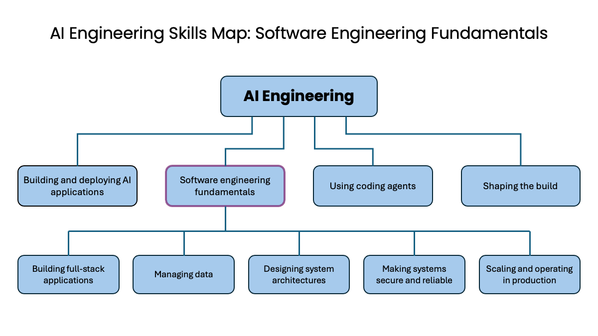

Lo que leo, veo y escucho
Biblioteca
Artículos, noticias, videos y podcasts que valen la pena, cada uno con lo que dice, lo que me llevo y —sobre todo— dónde se queda corto. Si una pieza no tiene ningún reparo, probablemente no se leyó con cuidado.
Building effective agents
Anthropic
Erik Schluntz y Barry Zhang
Separa "workflow" de "agente" y sostiene que la mayoría de los casos no necesitan un agente. Es la discusión de la sesión 06 antes de tenerla.
Ver la ficha →

The AI Engineering Skills Map in detail: Software engineering fundamentals
Andrew Ng
Ng sostiene que los agentes de código no eliminan los fundamentos de software: los convierten en la única forma de dirigir al agente.
Ver la ficha →

But what is a GPT? Visual intro to transformers
3Blue1Brown
Empieza por desarmar la sigla: generative pre-trained transformer.
Ver el video →

¿Qué es un LLM? Enormes Modelos del Lenguaje
Dot CSV
Cuenta veinte años del campo resolviendo el mismo problema cuatro veces: dado el texto de un tuit, decir si el sentimiento es positivo o negativo.
Ver el video →

Attention in transformers, step-by-step
3Blue1Brown
Ver el video →

Deep Dive into LLMs like ChatGPT
Andrej Karpathy
Ver el video →

What are Word Embeddings?
IBM Technology
Ver el video →

Prompt Engineering Tutorial: Master ChatGPT and LLM Responses
freeCodeCamp.org
Ver el video →

Prompting 101 | Code w/ Claude
Anthropic
Ver el video →

Cómo usar (BIEN) ChatGPT y cualquier Inteligencia Artificial
Dot CSV
Ver el video →

AI prompt engineering: A deep dive
Anthropic
Ver el video →

IBM AI Experts Reveal Prompt Engineering Secrets
IBM Technology
Ver el video →

Build AI Function Calling with LangChain & Advanced AI Models
IBM Technology
Ver el video →

How to Connect an LLM to Python Functions (Tool Calling Tutorial)
Dataquest
Ver el video →

Tutorial Assistants API de OpenAI · Parte 2: Function Calling
LLM Master
Ver el video →

Pydantic is all you need · Jason Liu
AI Engineer
Ver el video →

Pydantic is STILL all you need · Jason Liu
AI Engineer
Ver el video →

The 5 Levels Of Text Splitting For Retrieval
Greg Kamradt
Greg Kamradt organiza el chunking en cinco niveles que van de lo mecánico a lo semántico, y arranca con una regla que repite tres veces a lo largo de la hora: **el objetivo no es…
Ver el video →

Vector Databases simply explained! (Embeddings & Indexes)
Python Engineer
Cuatro minutos, y la frase más útil está en los primeros veinte segundos: las bases de datos vectoriales levantaron cientos de millones y se las llamó "un nuevo tipo de base de…
Ver el video →

What is Retrieval-Augmented Generation (RAG)?
IBM Technology
Marina Danilevsky, investigadora senior de IBM Research, explica RAG en seis minutos partiendo de una anécdota doméstica que funciona mejor que cualquier diagrama.
Ver el video →

¿Qué es RAG? Clase con código y ejemplo
EvoAcademy
Una clase en español que construye un RAG completo en Google Colab, de principio a fin.
Ver el video →

Learn RAG From Scratch: Python AI Tutorial
freeCodeCamp.org · Lance Martin (LangChain)
Un curso entero, no un video.
Ver el video →

Top 3 RAG Retrieval Strategies: Sparse, Dense & Hybrid Explained
IBM Technology
Ver el video →

Mastering Retrieval for LLMs: BM25, Fine-tuned Embeddings and Re-Rankers
Trelis Research
Ver el video →

Advanced RAG 04: Reranking with Cross Encoders and Cohere API
Sam Witteveen
Ver el video →

The Best RAG Technique Yet? Anthropic's Contextual Retrieval Explained
Prompt Engineering
Ver el video →